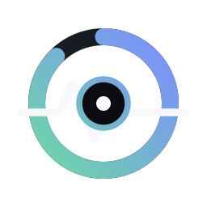

CPU
--%

OVERVIEW
Live hardware and game telemetry.
ACTIVE SESSION
Monitoring starts automatically when a supported game is detected.
QUICK ACTION
Prepare Windows and prioritize your active game session.
LIVE TELEMETRY
LIBRARY
Detected games and recent sessions.
Your library will appear here automatically.
LOCAL HISTORY
История сохраняется на этом компьютере между запусками.
PERFORMANCE
Choose how VoidCore prepares Windows for gaming.
ANALYSIS
Understand performance drops and bottlenecks.
VoidCore will show the probable cause and recommendations here.
CONFIGURATION
Application behavior and startup preferences.
GITHUB RELEASES
Получение состояния обновлений…
Скачивание и установка — только по вашему запросу, вне игры.